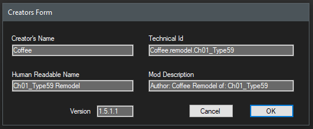

Creating WOTMOD files.
In order to create a packaged wotmod zip file you must first load the tank you wish to create the wotmod from.
There must be data for this tank in the res_mods folder.
The builder will package these files.
PNG images of the tank used in the carosusel and panels 60x100 and 420x307 sizes.
Scripts Tank.xml
.model
.visual_processed
.primitive_processed
.vt never included in wotmod files.
left.track
right.track
.segment
.segment_1
.segment_2
Track,Chassis, Hull, Turret, Gun .dds textures.
Any crash tank files are packaged as well.
Tank Exporter changes paths to resources in visual_processed,
.model and the tanks xml automatically based on what is in res_mods.
All data that will be packed in to the wotmod file will come from what is in the res_mods. No where else.
Tank Exporter has a new panel to create the "meta.xml" that will be packaged in the WOTMOD file.
You only need to enter a name in the "Creator's Name" field!
TE will fill in the rest for you.

Click OK and find where the world_of_tanks/mods/currentVersion/ folder.. DONT CHANGE THE SAVED NAME!
Click Save....
After,
TE will search every file in the res_mods that is relevant to the loaded tank.
Any file that contains the tanks name will be included in the wotmod file.
wotmod zips have NO compression. They are store only zip files as it is with all WOT files stored in zips.